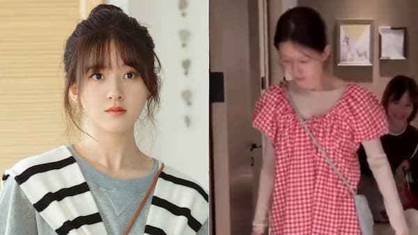

Who is Zhao 'Rosy' Lusi?
Zhao 'Rosy' Lusi is a Chinese actress and singer born in Chengdu,
China. She began acting in 2018, working hard to do what she loved.
Though she had been acting since 2018, she gained the most attention
after starring in the famous show "The Romance of Tiger and Rose" in
2020. Since then, she has done multitudes of dramas, with her more
popular ones being "Hidden Love", "Love Like the Galaxy", and "The
Story of Pearl Girl"
Current News
In the past couple of months, Rosy Lusi has been in the spotlight, not
because of her work but what has happened to her because of her work.
In late Decemeber 2024, there was news that Rosy Lusi had collapsed,
to the point where she could not walk or talk. Later it was learned
that her condition was a somatic attack of anxiety, depression, and
extreme loss of weight.

This is her before and after